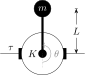
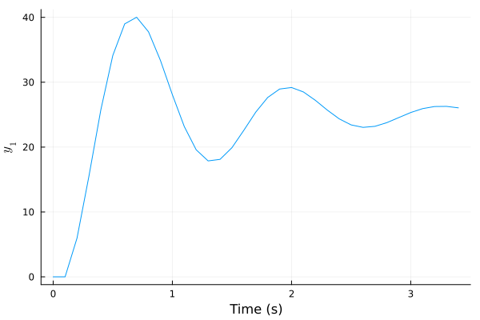
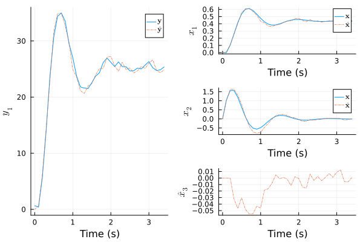
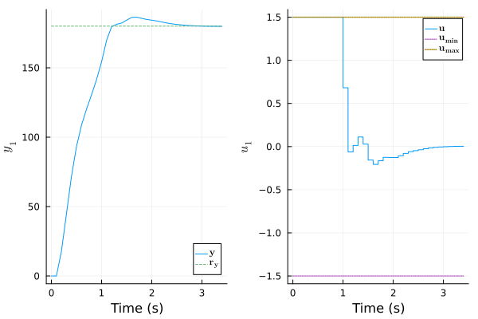
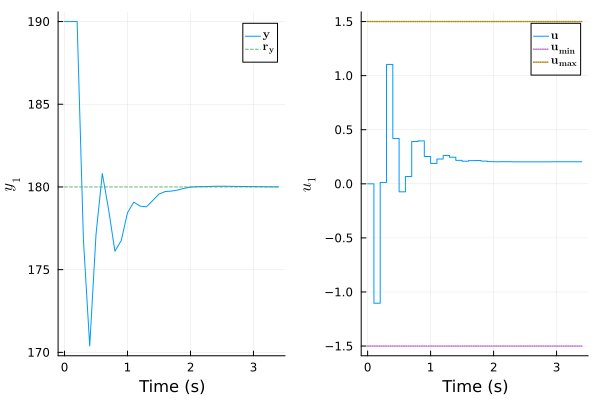
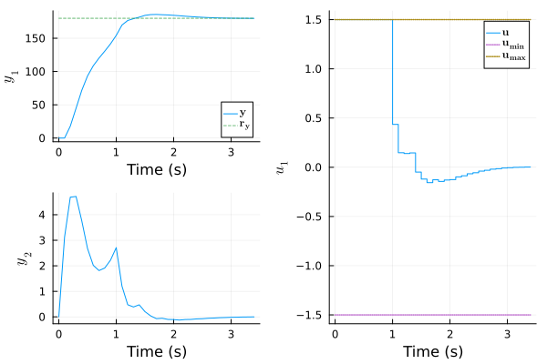
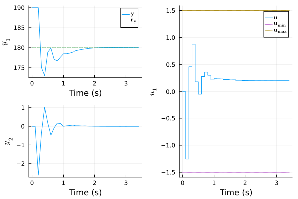
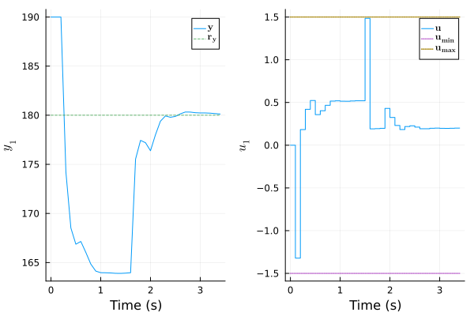
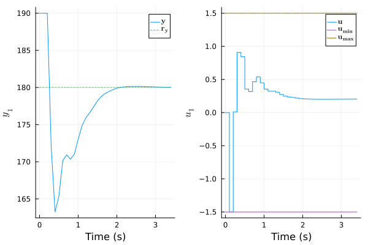

Manual: Nonlinear Design
Nonlinear Model
In this example, the goal is to control the angular position $θ$ of a pendulum attached to a motor. Knowing that the manipulated input is the motor torque $τ$, the I/O vectors are:
\[\begin{aligned} \mathbf{u} &= τ \\ \mathbf{y} &= θ \end{aligned}\]
The following figure presents the system:

The plant model is nonlinear:
\[\begin{aligned} \dot{θ}(t) &= ω(t) \\ \dot{ω}(t) &= -\frac{g}{L}\sin\big( θ(t) \big) - \frac{K}{m} ω(t) + \frac{1}{m L^2} τ(t) \end{aligned}\]
in which $g$ is the gravitational acceleration in m/s², $L$, the pendulum length in m, $K$, the friction coefficient at the pivot point in kg/s, and $m$, the mass attached at the end of the pendulum in kg. Here, the explicit Euler method discretizes the system to construct a NonLinModel:
using ModelPredictiveControl
function pendulum(par, x, u)
g, L, K, m = par # [m/s²], [m], [kg/s], [kg]
θ, ω = x[1], x[2] # [rad], [rad/s]
τ = u[1] # [N m]
dθ = ω
dω = -g/L*sin(θ) - K/m*ω + τ/m/L^2
return [dθ, dω]
end
# declared constants, to avoid type-instability in the f function, for speed:
const par, Ts = (9.8, 0.4, 1.2, 0.3), 0.1
f(x, u, _ ) = x + Ts*pendulum(par, x, u) # Euler method
h(x, _ ) = [180/π*x[1]] # [°]
nu, nx, ny = 1, 2, 1
model = NonLinModel(f, h, Ts, nu, nx, ny)Discrete-time nonlinear model with a sample time Ts = 0.1 s and:
1 manipulated inputs u
2 states x
1 outputs y
0 measured disturbances dThe output function $\mathbf{h}$ converts the $θ$ angle to degrees. Note that special characters like $θ$ can be typed in the Julia REPL or VS Code by typing \theta and pressing the <TAB> key. The tuple par and Ts are declared as constants here to improve the performance. It is good practice to first simulate model using sim! as a quick sanity check:
using Plots
u = [0.5]
N = 35
res = sim!(model, N, u)
plot(res, plotu=false)
Nonlinear Model Predictive Controller
An UnscentedKalmanFilter estimates the plant state :
σQ=[0.1, 0.5]; σR=[0.5]; nint_u=[1]; σQint_u=[0.1]
estim = UnscentedKalmanFilter(model; σQ, σR, nint_u, σQint_u)UnscentedKalmanFilter estimator with a sample time Ts = 0.1 s, NonLinModel and:
1 manipulated inputs u (1 integrating states)
3 states x̂
1 measured outputs ym (0 integrating states)
0 unmeasured outputs yu
0 measured disturbances dThe vectors σQ and σR σR are the standard deviations of the process and sensor noises, respectively. The value for the velocity $ω$ is higher here (σQ second value) since $\dot{ω}(t)$ equation includes an uncertain parameter: the friction coefficient $K$. Also, the argument nint_u explicitly adds one integrating state at the model input, the motor torque $τ$ , with an associated standard deviation σQint_u of 0.1 N m. The estimator tuning is tested on a plant with a 25 % larger friction coefficient $K$:
const par_plant = (par[1], par[2], 1.25*par[3], par[4])
f_plant(x, u, _) = x + Ts*pendulum(par_plant, x, u)
plant = NonLinModel(f_plant, h, Ts, nu, nx, ny)
res = sim!(estim, N, [0.5], plant=plant, y_noise=[0.5])
plot(res, plotu=false, plotxwithx̂=true)
The estimate $x̂_3$ is the integrating state on the torque $τ$ that compensates for static errors. The Kalman filter performance seems sufficient for control.
As the motor torque is limited to -1.5 to 1.5 N m, we incorporate the input constraints in a NonLinMPC:
nmpc = NonLinMPC(estim, Hp=20, Hc=2, Mwt=[0.5], Nwt=[2.5])
nmpc = setconstraint!(nmpc, umin=[-1.5], umax=[+1.5])NonLinMPC controller with a sample time Ts = 0.1 s, Ipopt optimizer, UnscentedKalmanFilter estimator and:
20 prediction steps Hp
2 control steps Hc
1 manipulated inputs u (1 integrating states)
3 states x̂
1 measured outputs ym (0 integrating states)
0 unmeasured outputs yu
0 measured disturbances dWe test mpc performance on plant by imposing an angular setpoint of 180° (inverted position):
res_ry = sim!(nmpc, N, [180.0], plant=plant, x0=[0, 0], x̂0=[0, 0, 0])
plot(res_ry)
The controller seems robust enough to variations on $K$ coefficient. Starting from this inverted position, the closed-loop response to a step disturbances of 10° is also satisfactory:
res_yd = sim!(nmpc, N, [180.0], plant=plant, x0=[π, 0], x̂0=[π, 0, 0], y_step=[10])
plot(res_yd)
Economic Model Predictive Controller
Economic MPC can achieve the same objective but with lower economical costs. For this case study, the controller will aim to reduce the energy consumed by the motor. The power (W) transmitted by the motor to the pendulum is:
\[Ẇ(t) = τ(t) ω(t)\]
Thus, the work (J) done by the motor from $t = t_0$ to $t_{end}$ is:
\[W = \int_{t_0}^{t_{end}} Ẇ(t) \mathrm{d}t = \int_{t_0}^{t_{end}} τ(t) ω(t) \mathrm{d}t\]
With the sampling time $T_s$ in s, the prediction horizon $H_p$, the limits defined as $t_0 = k T_s$ and $t_{end} = (k+H_p) T_s$, and the left-endpoint rectangle method for the integral, we get:
\[W ≈ T_s \sum_{j=0}^{H_p-1} τ(k + j) ω(k + j)\]
The objective function will now include an additive term that penalizes the work done by the motor $W$ to reduce the energy consumption. Notice that $W$ is a function of the manipulated input $τ$ and the angular speed $ω$, a state that is not measured (only the angle $θ$ is measured here). As the arguments of NonLinMPC economic function JE do not include the states, the speed is now defined as an unmeasured output to design a Kalman Filter similar to the previous one ($\mathbf{y^m} = θ$ and $\mathbf{y^u} = ω$):
h2(x, _ ) = [180/π*x[1], x[2]]
nu, nx, ny = 1, 2, 2
model2 = NonLinModel(f , h2, Ts, nu, nx, ny)
plant2 = NonLinModel(f_plant, h2, Ts, nu, nx, ny)
estim2 = UnscentedKalmanFilter(model2; σQ, σR, nint_u, σQint_u, i_ym=[1])UnscentedKalmanFilter estimator with a sample time Ts = 0.1 s, NonLinModel and:
1 manipulated inputs u (1 integrating states)
3 states x̂
1 measured outputs ym (0 integrating states)
1 unmeasured outputs yu
0 measured disturbances dThe plant2 object based on h2 is also required since sim! expects that the output vector of plant argument corresponds to the model output vector in mpc argument. We can now define the $J_E$ function and the empc controller:
function JE(UE, ŶE, _ )
τ, ω = UE[1:end-1], ŶE[2:2:end-1]
return Ts*sum(τ.*ω)
end
empc = NonLinMPC(estim2, Hp=20, Hc=2, Mwt=[0.5, 0], Nwt=[2.5], Ewt=4.5e3, JE=JE)
empc = setconstraint!(empc, umin=[-1.5], umax=[+1.5])NonLinMPC controller with a sample time Ts = 0.1 s, Ipopt optimizer, UnscentedKalmanFilter estimator and:
20 prediction steps Hp
2 control steps Hc
1 manipulated inputs u (1 integrating states)
3 states x̂
1 measured outputs ym (0 integrating states)
1 unmeasured outputs yu
0 measured disturbances dThe keyword argument Ewt weights the economic costs relative to the other terms in the objective function. The term must be large enough to be significant but a too high value can lead to a static error on the angle setpoint. The second element of Mwt is zero since the speed $ω$ is not requested to track a setpoint. The closed-loop response to a 180° setpoint is:
res2_ry = sim!(empc, N, [180, 0], plant=plant2, x0=[0, 0], x̂0=[0, 0, 0])
plot(res2_ry)
and the energy consumption is slightly lower:
function calcW(res)
τ, ω = res.U_data[1, 1:end-1], res.X_data[2, 1:end-1]
return Ts*sum(τ.*ω)
end
Dict(:W_nmpc => calcW(res_ry), :W_empc => calcW(res2_ry))Dict{Symbol, Float64} with 2 entries:
:W_empc => 4.19004
:W_nmpc => 4.22099Also, for a 10° step disturbance:
res2_yd = sim!(empc, N, [180; 0]; plant=plant2, x0=[π, 0], x̂0=[π, 0, 0], y_step=[10, 0])
plot(res2_yd)
the new controller is able to recuperate more energy from the pendulum (i.e. negative work):
Dict(:W_nmpc => calcW(res_yd), :W_empc => calcW(res2_yd))Dict{Symbol, Float64} with 2 entries:
:W_empc => -0.135262
:W_nmpc => -0.0844752Of course, this gain is only exploitable if the motor electronic includes some kind of regenerative circuitry.
Linearizing the Model
Nonlinear MPC are more computationally expensive than LinMPC. Solving the problem should always be faster than the sampling time $T_s = 0.1$ s for real-time operation. This requirement is sometimes hard to meet on electronics or mechanical systems because of fast dynamics. To ease the design and comparison with LinMPC, the linearize function allows automatic linearization of NonLinModel based on ForwardDiff.jl. We first linearize model at the point $θ = π$ rad and $ω = τ = 0$ (inverted position):
linmodel = linearize(model, x=[π, 0], u=[0])Discrete-time linear model with a sample time Ts = 0.1 s and:
1 manipulated inputs u
2 states x
1 outputs y
0 measured disturbances dIt is worth mentioning that the Euler method in model object is not the best choice for linearization since its accuracy is low (approximation of a poor approximation). A SteadyKalmanFilter and a LinMPC are designed from linmodel:
kf = SteadyKalmanFilter(linmodel; σQ, σR, nint_u, σQint_u)
mpc = LinMPC(kf, Hp=20, Hc=2, Mwt=[0.5], Nwt=[2.5])
mpc = setconstraint!(mpc, umin=[-1.5], umax=[+1.5])LinMPC controller with a sample time Ts = 0.1 s, OSQP optimizer, SteadyKalmanFilter estimator and:
20 prediction steps Hp
2 control steps Hc
1 manipulated inputs u (1 integrating states)
3 states x̂
1 measured outputs ym (0 integrating states)
0 unmeasured outputs yu
0 measured disturbances dThe linear controller has difficulties to reject the 10° step disturbance:
res_lin = sim!(mpc, N, [180.0]; plant, x0=[π, 0], y_step=[10])
plot(res_lin)
Solving the optimization problem of mpc with DAQP optimizer instead of the default OSQP solver can help here. It is indeed documented that DAQP can perform better on small/medium dense matrices and unstable poles[1], which is obviously the case here (absolute value of unstable poles are greater than one):
using LinearAlgebra; poles = eigvals(linmodel.A)2-element Vector{Float64}:
0.26614608739843437
1.3338539126015654To install the solver, run:
using Pkg; Pkg.add("DAQP")Constructing a LinMPC with DAQP:
using JuMP, DAQP
daqp = Model(DAQP.Optimizer, add_bridges=false)
mpc2 = LinMPC(kf, Hp=20, Hc=2, Mwt=[0.5], Nwt=[2.5], optim=daqp)
mpc2 = setconstraint!(mpc2, umin=[-1.5], umax=[+1.5])LinMPC controller with a sample time Ts = 0.1 s, DAQP optimizer, SteadyKalmanFilter estimator and:
20 prediction steps Hp
2 control steps Hc
1 manipulated inputs u (1 integrating states)
3 states x̂
1 measured outputs ym (0 integrating states)
0 unmeasured outputs yu
0 measured disturbances ddoes improve the rejection of the step disturbance:
res_lin2 = sim!(mpc2, N, [180.0]; plant, x0=[π, 0], y_step=[10])
plot(res_lin2)
The closed-loop performance is still lower than the nonlinear controller, as expected, but computations are about 2000 times faster (0.00002 s versus 0.04 s per time steps, on average). Note that linmodel is only valid for angular positions near 180°. Multiple linearized models and controllers are required for large deviations from this operating point. This is known as gain scheduling.
- 1Arnström, D., Bemporad, A., and Axehill, D. (2022). A dual active-set solver for embedded quadratic programming using recursive LDLᵀ updates. IEEE Trans. Autom. Contr., 67(8). https://doi.org/doi:10.1109/TAC.2022.3176430.